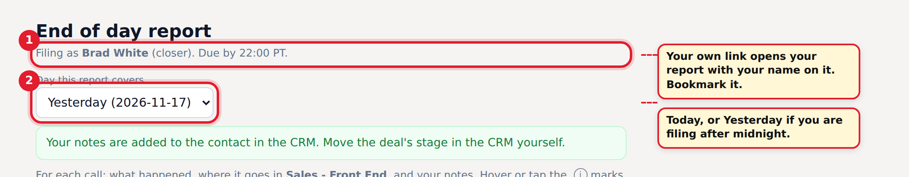
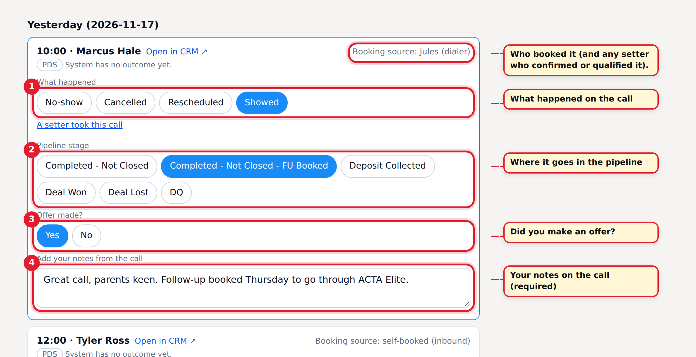
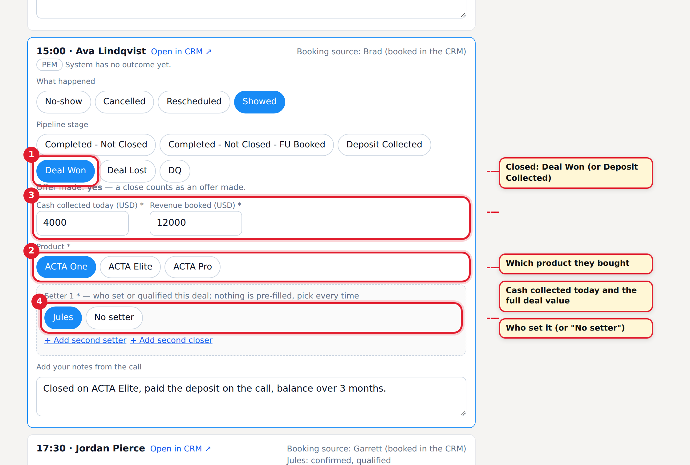
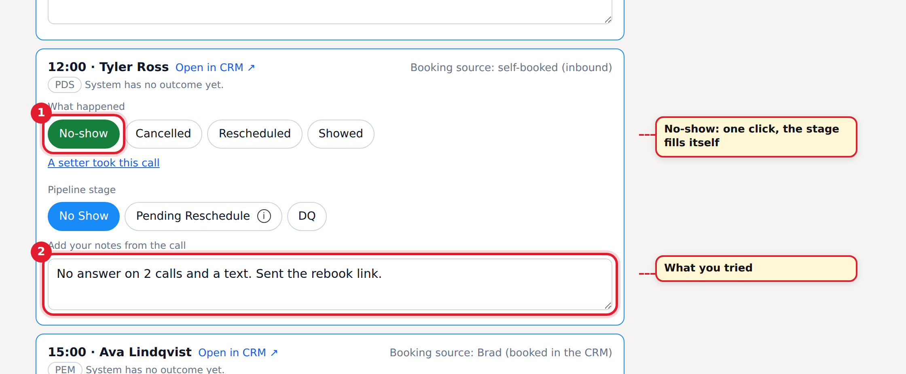
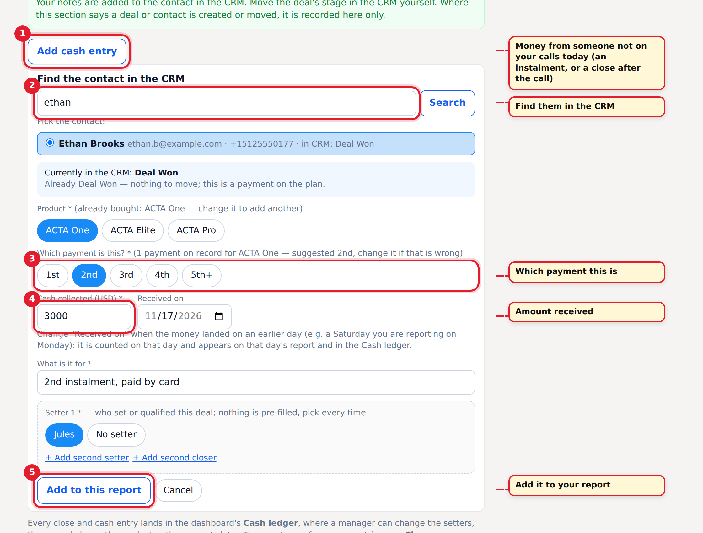
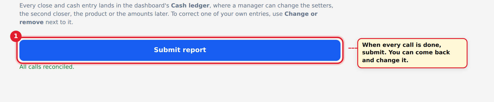

ACTA Academy · Garrett, Brad, Graham
End-of-day report: closers
How to file your end-of-day report: every call on your calendar, what happened, and any money in. About five minutes a day.
1Open your report
Open the private link Tommy sent you and bookmark it. It opens your own report with your name on it. File it every day you had calls, by 10pm Pacific. If you are filing after midnight, pick Yesterday.

2Go through each call
Every call on your calendar for the day is listed. For each one:
- What happened: No-show, Cancelled, Rescheduled or Showed.
- Pipeline stage: where it goes now.
- Offer made? Yes or No.
- Notes: always required.
The top right of each call shows who booked it. If Jules confirmed or qualified it, that shows there too.

3A close
Pick Deal Won (or Deposit Collected), then the product, the cash collected today, the full deal value and who set it (No setter if nobody did).

4No-show, cancelled or rescheduled
One click, then a note on what you tried. For a reschedule, move it on the calendar as normal; the new time is picked up from the calendar.

5Money from someone not on your calls today
An instalment on an earlier deal, or a close that happened after the call: press Add cash entry, find the person, check the product and which payment it is, enter the amount and what it is for, then Add to this report. Only fill in revenue for a new sale; a later instalment has none.

6Submit
When every call is done the button turns blue. You can open the report again and change it later; it keeps a history of changes.

Screens show sample prospects. Your notes are added to each contact in the CRM automatically. Move the deal's stage in the CRM yourself.